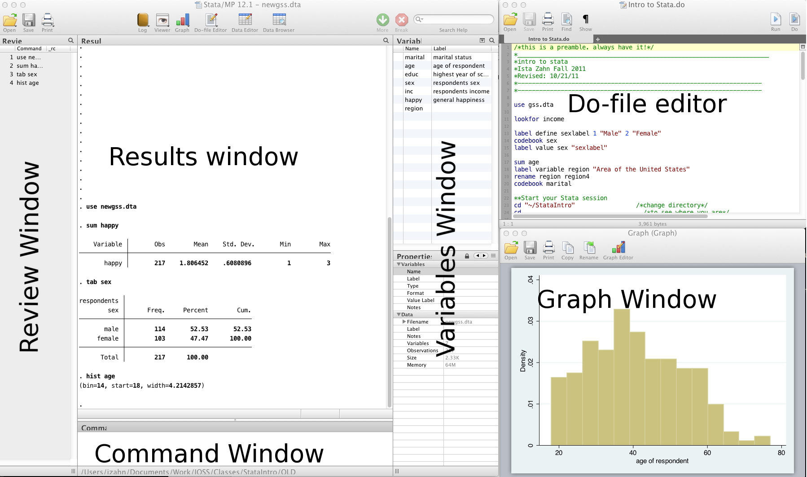

Stata Introduction
Topics
- Stata interface and Do-files
- Reading and writing data
- Basic summary statistics
- Basic graphs
- Basic data management
- Bivariate analyses
Setup
Class Structure and organization
- Informal — Ask questions at any time. Really!
- Collaboration is encouraged - please spend a minute introducing yourself to your neighbors!
- If you are using a laptop, you will need to adjust file paths accordingly
- Make comments in your Do-file - save on flash drive or email to yourself
Prerequisites
This is an introductory Stata course:
- Assumes no prior knowledge of how to use Stata
- We do assume you know why you want to learn Stata. If you don’t, and want a comparison of Stata to other statistical software, see our Data Science Tools workshop
- Relatively slow-paced
Goals
We will learn about the Stata language by analyzing data from the general social survey (gss). In particular, our goals are to:
- Familiarize yourself with the Stata interface
- Get data in and out of Stata
- Compute statistics and construct graphical displays
- Compute new variables and transformations
- Perform univariate and bivariate data analyses
Stata basics
GOAL: To learn the basics about Stata, how to interact with Stata, and how to read in and save data. In particular:
- What is Stata, why use Stata, and advantages of using Stata
- Three ways of interacing with Stata
- Set the working directory
- Read, save, and write data
What is Stata?
- Stata is a statistical software package that you can use to perform data analysis and management, as well as create graphics
- Stata is commonly used among health, sociology, and economics researchers, particularly those working with large data sets
Why use Stata?
- It is easy to learn and is supported by a wide range of introductory textbooks
- It offers a wide range of statistical models in a consistent interface
- It presents results in a clear format
- It has very good built-in help documentation and a broad user community where you can seek help
- Student and other discount packages are available at reasonable cost
How does Stata work?
When Stata is running, variables, data, etc., are stored in memory.
The user can use clear command to clear up memory before running further commands,
unless they want to save their changes in the original dataset or a new dataset.
Interfaces

- Review and Variable windows can be closed (user preference)
- Command window can be shortened (recommended)
GUI and command window
There are two ways of interacting with Stata that will not result in a saveable record of what you have done:
GUI. The Graphical User Interface (GUI) allows you to perform analyses using drop-down menus, rather than writing code. This can be easier for first time users and Stata will helpfully display the command and proper syntax for the operation that you have selected. However, we strongly recommend not using the GUI, since it does not produce a script — a record of what you have done — and thus leads to analyses that are unreproducible.
Command window. From the command window you can type commands to manage and analyze your data.
- The advantage is that you can quickly produce output of a single command.
- The disadvantage is that you cannot store your syntax in a script to reproduce in the future.
Do-file
The third way of interacting with Stata does provide you with a saveable record of your work:
- Do-file. A do-file is a plain text file within which you can write and save commands for later use. There are several advantages to using a do-file and we strongly recommend that you always interact with Stata in this way:
- Allows you to submit more than one command to Stata at once.
- Has specialized features for programmers such as syntax highlighting, code folding, autocompletion, and bookmarks to important lines in your code, brace matching, and more.
- With a do-file, it is easy to save, review, change, and share your code with others — including your future self!
Here are some resources for learning more about Stata and do-files:
Stata help
To get help in Stata type help followed by topic or command, e.g., help codebook.
Syntax rules
Most Stata commands follow the same basic syntax:
Command varlist, options.Use comments liberally — start with a comment describing your do-file and use comments throughout
- Use
*to comment a line and//for in-line comments - Use
///to break varlists over multiple lines
- Use
Exercise 0
Launch the Stata program (MP or SE, does not matter unless doing computationally intensive work) * Open up a new do-file * Run our first Stata code!
- Try to get Stata to say “Hello World!”. Search
help display
- Try to get Stata to break “Hello World!†over two lines:
Working directory
- print current working directory
- change working directory
A note about file path names
- If your file path has no spaces in the name (that means all directories, folders, file names, etc. can have no spaces), you can write the file path as it is
- If there are spaces, you need to put your file path name in quotes
- Best to get in the habit of quoting file paths
Reading data
Data file commands
- Next, we want to open our data file
- Open / save data sets with
useandsave:
Where’s my data?
- Data editor (browse)
- Data editor (edit)
- Using the data editor is discouraged (why?)
- Always keep any changes to your data in your do-file
- Avoid temptation of making manual changes by viewing data via the browser rather than editor
Reading non-Stata data
- Import / export delimited text files
// import data from a .csv file
import delimited gss.csv, clear
// save data to a .csv file
export delimited gss_new.csv, replace- Import / export Excel files
What if my data is from another statistical software program?
- SPSS/PASW will allow you to save your data as a Stata file
- Go to: file -> save as -> Stata (use most recent version available)
- Then you can just go into Stata and open it
- Another option is
StatTransfer, a program that converts data from/to many common formats, including SAS, SPSS, Stata, and many more.
Statistics & graphs
GOAL: To learn the basic commands to review, inspect, and plot data in Stata. In particular:
- Learn more about the variables in our dataset — using the
describe,codebook, andbrowsecommands - Produce univariate distributions using
histogram, and bivariate distribution usingscatterplot - Tabulate or summarize your data within certain groups using
bysort
The most frequently used commands for reviewing and inspecting data are summarized below:
| Command | Description |
|---|---|
describe |
labels, storage type etc. |
sum |
statistical summary (mean, sd, min/max etc.) |
codebook |
storage type, unique values, labels |
list |
print actual values |
tab |
(cross) tabulate variables |
browse |
view the data in a spreadsheet-like window |
First, let’s ask Stata for help about these commands:
Note — if you run these commands without specifying variables, Stata will produce output for every variable
Basic graphing commands
Univariate distribution(s) using hist:
View bivariate distributions with scatterplots:
The by command
Sometimes, you’d like to generate output based on different categories of a grouping variable, for example:
- you want to know the distribution of happiness seperately for men and women: tabulate
happybysex:
- you want to know the mean level of education for different marital status: summarize
educationby marital status (marital):
Save your changes to the original gss.dta dataset.
Exercise 1
We are using The Generations of Talent Study (talent.dta) to practice reading in data, plotting data, and calculating descriptive statistics. The dataset includes information on quality of employment as experienced by today’s multigenerational workforces. Here is a codebook of a subset of variables:
| Variable name | Label |
|---|---|
| job | type of main job |
| workload | how long hours do you work per week |
| otherjob | do you have other paid jobs beside main job |
| schedule | which best describes your work schedule |
| fulltime | Does your employer consider you a full-time or part-time employee |
| B3A | How important are the following to you? Your work |
| B3B | How important are the following to you? Your family |
| B3C | How important are the following to you? Your friends |
| marital | Which of the following best describes your current marital status |
| I3 | Sex/gender |
| income | What was your total household income during last year |
Create a new do-file for the following exercise prompts. After the exercise save the do-file to your working directory.
- Read in the dataset
talent.dta:
- Examine a few selected variables using the
describe,sumandcodebookcommands:
- Produce a histogram of hours worked (
workload) and add a normal curve:
- Summarize the total household income last year (
income) by marital status (marital):
- Cross-tabulate marital status (
marital) with respondents’ type of main job (job):
Basic data management
GOAL: To learn how to add variable labels and value labels, as well as create new variables in Stata. In particular:
- Use
labelandrenameto set / modify variable and value labels - Use
generateandreplaceto create a new variables based on values of existing variables/recode a variable
Variable & value labels
Variable labels
It’s good practice to ALWAYS label every variable, no matter how insignificant it may seem.
Working on subsets
It is often useful to select just those rows of your data where some condition holds — for example select only rows where sex is 1 (male). The following operators allow you to do this:
| Operator | Meaning |
|---|---|
| == | equal to |
| != | not equal to |
| > | greater than |
| >= | greater than or equal to |
| < | less than |
| <= | less than or equal to |
| & | and |
| | | or |
Note the double equals signs for testing equality.
Generating & replacing variables
Often, it can be useful to start with a new variable composed of blank values and fill values in based on the values of existing variables:
Exercise 2
Open the talent.dta data, use the basic data management tools we have learned to add labels and generate new variables:
- Tabulate the variable, marital status (
marital), with and without labels:
- Summarize the total household income last year (
income) for married individuals only:
- Generate a new
overworkdummy variable from the original variableworkperweekthat will take on a value of 1 if a person works more than 40 hours per week, and 0 if a person works equal to or less than 40 hours per week:
- Generate a new
marital_dummydummy variable from the original variablemaritalthat will take on a value of 1 if a person is either married or partnered and 0 otherwise:
- Rename the
Sexvariable and give it a more intuitive name:
- Give a variable label and value labels for the variable
overwork:
- Generate a new variable called
work_familyand code it as 2 if a respondent perceived work to be more important than family, 1 if a respondent perceived family to be more important than work, and 0 if the two are of equal importance:
- Save the changes to
newtalent.dta
Click for Exercise 2 Solution
use talent.dta, clear
tab marital
tab marital, nol
gen overwork = .
replace overwork = 1 if workperweek > 40
replace overwork = 0 if workperweek <= 40
tab overwork
gen marital_dummy = .
replace marital_dummy = 1 if marital == 1 | marital == 2
replace marital_dummy = 0 if marital != 1 & marital != 2
tab marital_dummy
rename I3 Sex
label variable overwork "whether someone works more than 40 hours per week"
label define overworklabel 1 "Yes" 0 "No"
label values overwork overworklabel
gen work_family = .
replace work_family = 2 if B3A > B3B
replace work_family = 1 if B3A < B3B
replace work_family = 0 if B3A == B3B
save newtalent.dta, replace Bivariate analyses
GOAL: To learn the basic commands for performing the following bivariate analyses.
- Chi-squared test
- Independent group t-test
- One-way ANOVA
Chi-squared test
The Chi-squared statistic is commonly used for testing relationships between categorical variables.
In Stata, both the tabulate and tabi commands conduct the Pearson’s Chi-square test.
- The
tabulate(may be abbreviated astab) command produces one- or two-way frequency tables given one or two raw variables - The
tabicommand is used to re-analyze a published table without access to the raw data - These commands also can run a Chi-square test using the
chi2option:
The first command below conducts a Chi-square test for a 2x2 table, while the second and third commands run the test for 3x2 and 2x3 tables, respectively.
t-test
The t-test is a type of inferential statistic that can be used to determine if a sample mean differs from a postulated population mean, or if two sample means came from the same population.
Types of t-test:
- Independent group t-test: designed to compare means of same variable between two groups. For example, test GRE scores between students from two countries
- Other t-tests: single sample t-test; paired t-test. More details see: https://www.stata.com/manuals13/rttest.pdf
In our example, we conduct an independent group t-test to compare mean income (inc) between males and females (sex):
One-way ANOVA
One-way ANOVA allows us to test the equality of more than two sample means (i.e., whether they could plausibly have come from the same population). For example, our dataset contains income (inc) and four regions of the country (region). Using one-way ANOVA, we can simultaneously test the equality of the income means across all regions.
Now we find evidence that the means are different, but perhaps we are interested only in testing whether the means for the North (region==1) and South (region==4) are different. We also use one-way ANOVA, which in this case would be equivelant to the independent group t-test:
Exercise 3
Open the newtalent.dta data, use the basic data management tools we have learned to conduct bivariate analysis.
- Test the relationship between two variables
sexand type of main job (job):
- Test if there is a significant difference in hours worked per week (
workload) andsex:
- Test if there is a significant difference in hours worked per week (
workload) and marital status (marital):
Wrap-up
Feedback
These workshops are a work in progress, please provide any feedback to: help@iq.harvard.edu
Resources
- IQSS
- Workshops: https://dss.iq.harvard.edu/workshop-materials
- Data Science Services: https://dss.iq.harvard.edu/
- Research Computing Environment: https://iqss.github.io/dss-rce/
- HBS
- Research Computing Services workshops: https://training.rcs.hbs.org/workshops
- Other HBS RCS resources: https://training.rcs.hbs.org/workshop-materials
- RCS consulting email: mailto:research@hbs.edu
- Stata
- UCLA website: http://www.ats.ucla.edu/stat/Stata/
- Stata website: http://www.stata.com/help.cgi?contents
- Email list: http://www.stata.com/statalist/